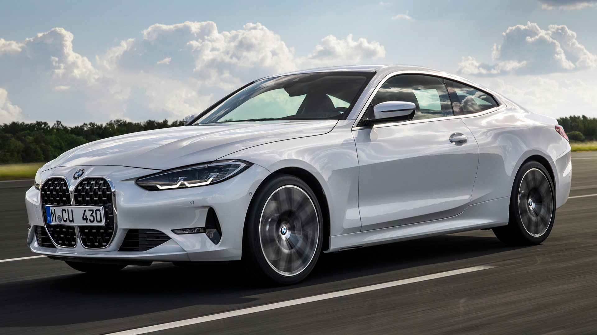

THE BMW PODCAST:CHANGING LANES
"Changing Lanes” is the official podcast of BMW. Featuring new episodes each week, in which our hosts take you on exciting journeys and talk about innovative technologies, lifestyle, design, cars and more. Find and subscribe to Changing Lanes on all major podcasting platforms.
WHAT’S YOUR REASON NOT TO CHANGE?
You will always have plenty of reasons to change.
But the truth is: It’s always easier to find a reason not to. It might not be the best time for you right now, or perhaps you find yourself in the wrong place. You might think that technology still hasn’t reached its peak, or that the design looks strange.
The top E-Car hacks
What does “preconditioning” mean, what are BMW Points, and what tricks can you use to get the most out of your battery, while at the same time conserving its energy storage as best as possible? We’ve put together ten e-car hacks – quick tips especially for drivers of electric vehicles and plug-in hybrids.